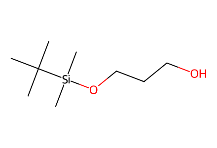
CC(C)(C)[Si](C)(C)OCCCOAll displayed compounds in Schemes1-5, four fragment preparations, their union and both acetonide macrolactone products. Main manuscript only; unshown intermediates are operation stages and SI optimization is unavailable. Facts compiled deterministically; independent review pending.
完整 JSON · 逐步 CSV · 路线序列 · SDF · HRMS 核对
| 事件 | 分子连接 | 报告产率 | Canonical reaction SMILES |
|---|---|---|---|
| A01 | 1 → 2 | 2: 76% | CC(C)(C)[Si](C)(C)OCCCO>>C=CC[C@H](O)CCO[Si](C)(C)C(C)(C)C |
| A01-recycle1 | 1 → 2 | 2: 74% | CC(C)(C)[Si](C)(C)OCCCO>>C=CC[C@H](O)CCO[Si](C)(C)C(C)(C)C |
| A01-recycle2 | 1 → 2 | 2: 68% | CC(C)(C)[Si](C)(C)OCCCO>>C=CC[C@H](O)CCO[Si](C)(C)C(C)(C)C |
| A02 | 2 → A | not reported | C=CC[C@H](O)CCO[Si](C)(C)C(C)(C)C>>CO[C@@H](CCCC=O)CCO[Si](C)(C)C(C)(C)C |
| B01 | 3 → 4 | 4: 90% | CC(C)=CCC/C(C)=C/CO>>C=C[C@H](C)[C@H](O)/C=C(\C)CCC=C(C)C |
| B02 | 4 → B | not reported | C=C[C@H](C)[C@H](O)/C=C(\C)CCC=C(C)C>>CC(=O)[C@H](C)[C@@H](/C=C(\C)CCC=C(C)C)O[Si](C)(C)C(C)(C)C |
| C01 | 5 → 6 | 6: 74% | CC(C)=CCC[C@H](C)CCO>>COC(=O)CC[C@H](C)CCO |
| C02 | 6 → 7 | 7: 75% | COC(=O)CC[C@H](C)CCO>>C=CC[C@H](O)C[C@@H](C)CCC(=O)OC |
| C03 | 7 → C | not reported | C=CC[C@H](O)C[C@@H](C)CCC(=O)OC>>COC(=O)CC[C@H](C)C[C@H](C/C=C/I)O[Si](C)(C)C(C)(C)C |
| D01 | 8 → 9 | 9: 81% | CCOC(=O)CCO>>C=C[C@H](C)[C@H](O)CC(=O)OCC |
| D02 | 9 → 10 | not reported | C=C[C@H](C)[C@H](O)CC(=O)OCC>>CCOC(=O)C[C@@H](OCc1ccc(OC)cc1)[C@@H](C)C(C)=O |
| D03 | 10 + S-2-methyl-4-pentenal → 11 | 11: 72% | C=CC[C@H](C)C=O.CCOC(=O)C[C@@H](OCc1ccc(OC)cc1)[C@@H](C)C(C)=O>>C=CC[C@H](C)[C@@H](O)CC(=O)[C@H](C)[C@@H](CC(=O)OCC)OCc1ccc(OC)cc1 |
| D04 | 11 → 12 | not reported | C=CC[C@H](C)[C@@H](O)CC(=O)[C@H](C)[C@@H](CC(=O)OCC)OCc1ccc(OC)cc1>>C=CC[C@H](C)[C@@H]1C[C@H]([C@H](C)[C@H](O)CC(=O)OCC)OC(C)(C)O1 |
| D05 | 12 → D | not reported | C=CC[C@H](C)[C@@H]1C[C@H]([C@H](C)[C@H](O)CC(=O)OCC)OC(C)(C)O1>>C[C@@H]([C@H]1C[C@@H]([C@@H](C)C/C=C/B2OC(C)(C)C(C)(C)O2)OC(C)(C)O1)[C@@H](CC(=O)O)O[Si](C)(C)C(C)(C)C |
| U01 | A + B → AB | not reported | CC(=O)[C@H](C)[C@@H](/C=C(\C)CCC=C(C)C)O[Si](C)(C)C(C)(C)C.CO[C@@H](CCCC=O)CCO[Si](C)(C)C(C)(C)C>>CO[C@@H](CCC[C@@H](O)C[C@H](O)[C@H](C)[C@@H](/C=C(\C)CCC=C(C)C)O[Si](C)(C)C(C)(C)C)CCO[Si](C)(C)C(C)(C)C |
| U02 | AB → 13 | not reported | CO[C@@H](CCC[C@@H](O)C[C@H](O)[C@H](C)[C@@H](/C=C(\C)CCC=C(C)C)O[Si](C)(C)C(C)(C)C)CCO[Si](C)(C)C(C)(C)C>>CO[C@@H](CCC[C@H](C[C@H](O)[C@H](C)[C@@H](/C=C(\C)CC/C=C/B1OC(C)(C)C(C)(C)O1)O[Si](C)(C)C(C)(C)C)O[Si](C)(C)C(C)(C)C)CCO[Si](C)(C)C(C)(C)C |
| U03 | 13 + C → ABC | not reported | COC(=O)CC[C@H](C)C[C@H](C/C=C/I)O[Si](C)(C)C(C)(C)C.CO[C@@H](CCC[C@H](C[C@H](O)[C@H](C)[C@@H](/C=C(\C)CC/C=C/B1OC(C)(C)C(C)(C)O1)O[Si](C)(C)C(C)(C)C)O[Si](C)(C)C(C)(C)C)CCO[Si](C)(C)C(C)(C)C>>COC(=O)CC[C@H](C)C[C@H](C/C=C/C=C/CC/C(C)=C/[C@@H](O[Si](C)(C)C(C)(C)C)[C@@H](C)[C@@H](O)C[C@@H](CCC[C@@H](C/C=C\I)OC)O[Si](C)(C)C(C)(C)C)O[Si](C)(C)C(C)(C)C |
| U04 | ABC + D → ABCD | not reported | COC(=O)CC[C@H](C)C[C@H](C/C=C/C=C/CC/C(C)=C/[C@@H](O[Si](C)(C)C(C)(C)C)[C@@H](C)[C@@H](O)C[C@@H](CCC[C@@H](C/C=C\I)OC)O[Si](C)(C)C(C)(C)C)O[Si](C)(C)C(C)(C)C.C[C@@H]([C@H]1C[C@@H]([C@@H](C)C/C=C/B2OC(C)(C)C(C)(C)O2)OC(C)(C)O1)[C@@H](CC(=O)O)O[Si](C)(C)C(C)(C)C>>COC(=O)CC[C@H](C)C[C@H](C/C=C/C=C/CC/C(C)=C/[C@@H](O[Si](C)(C)C(C)(C)C)[C@@H](C)[C@@H]1C[C@H](O[Si](C)(C)C(C)(C)C)CCC[C@H](OC)C/C=C\C=C\C[C@H](C)[C@@H]2C[C@@H](OC(C)(C)O2)[C@H](C)[C@H](O[Si](C)(C)C(C)(C)C)CC(=O)O1)O[Si](C)(C)C(C)(C)C |
| U05 | ABCD → acetonide-22-ring + acetonide-24-ring | not reported | COC(=O)CC[C@H](C)C[C@H](C/C=C/C=C/CC/C(C)=C/[C@@H](O[Si](C)(C)C(C)(C)C)[C@@H](C)[C@@H]1C[C@H](O[Si](C)(C)C(C)(C)C)CCC[C@H](OC)C/C=C\C=C\C[C@H](C)[C@@H]2C[C@@H](OC(C)(C)O2)[C@H](C)[C@H](O[Si](C)(C)C(C)(C)C)CC(=O)O1)O[Si](C)(C)C(C)(C)C>>COC(=O)CC[C@H](C)C[C@@H](O)C/C=C/C=C/CC/C(C)=C/[C@@H](O)[C@@H](C)[C@@H]1C[C@H](O)CCC[C@H](OC)C/C=C\C=C\C[C@H](C)[C@@H]2C[C@@H](OC(C)(C)O2)[C@H](C)[C@H](O)CC(=O)O1.COC(=O)CC[C@H](C)C[C@@H](O)C/C=C/C=C/CC/C(C)=C/[C@H]1OC(=O)C[C@@H](O)[C@@H](C)[C@H]2C[C@H](OC(C)(C)O2)[C@@H](C)C/C=C/C=C\C[C@@H](OC)CCC[C@@H](O)C[C@H](O)[C@@H]1C |
| U06 | acetonide-22-ring + acetonide-24-ring → iso-gladiolin-Me | not reported | COC(=O)CC[C@H](C)C[C@@H](O)C/C=C/C=C/CC/C(C)=C/[C@@H](O)[C@@H](C)[C@@H]1C[C@H](O)CCC[C@H](OC)C/C=C\C=C\C[C@H](C)[C@@H]2C[C@@H](OC(C)(C)O2)[C@H](C)[C@H](O)CC(=O)O1.COC(=O)CC[C@H](C)C[C@@H](O)C/C=C/C=C/CC/C(C)=C/[C@H]1OC(=O)C[C@@H](O)[C@@H](C)[C@H]2C[C@H](OC(C)(C)O2)[C@@H](C)C/C=C/C=C\C[C@@H](OC)CCC[C@@H](O)C[C@H](O)[C@@H]1C>>COC(=O)CC[C@H](C)C[C@@H](O)C/C=C/C=C/CC/C(C)=C/[C@H]1OC(=O)C[C@@H](O)[C@@H](C)[C@H](O)C[C@H](O)[C@@H](C)C/C=C/C=C\C[C@@H](OC)CCC[C@@H](O)C[C@H](O)[C@@H]1C |

CC(C)(C)[Si](C)(C)OCCCO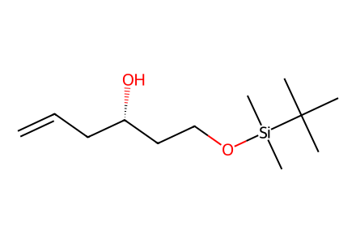
C=CC[C@H](O)CCO[Si](C)(C)C(C)(C)C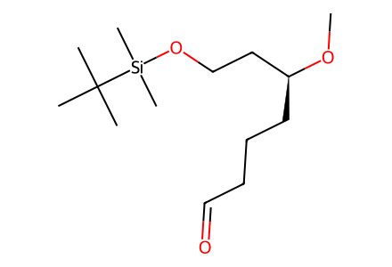
CO[C@@H](CCCC=O)CCO[Si](C)(C)C(C)(C)C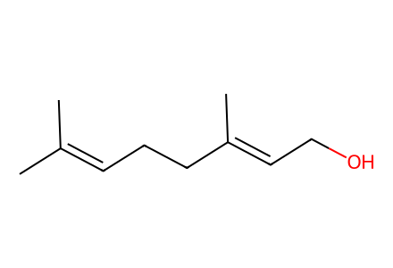
CC(C)=CCC/C(C)=C/CO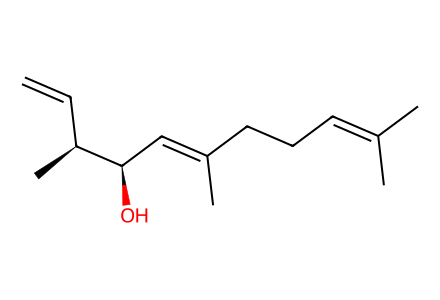
C=C[C@H](C)[C@H](O)/C=C(\C)CCC=C(C)C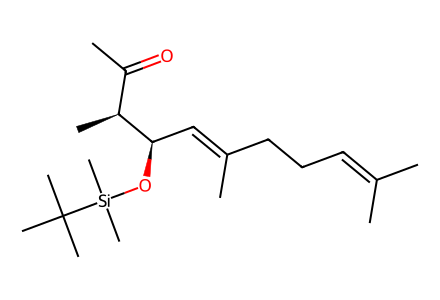
CC(=O)[C@H](C)[C@@H](/C=C(\C)CCC=C(C)C)O[Si](C)(C)C(C)(C)C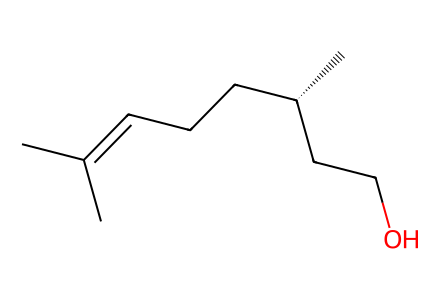
CC(C)=CCC[C@H](C)CCO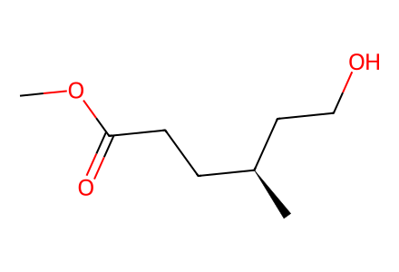
COC(=O)CC[C@H](C)CCO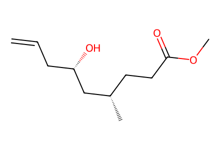
C=CC[C@H](O)C[C@@H](C)CCC(=O)OC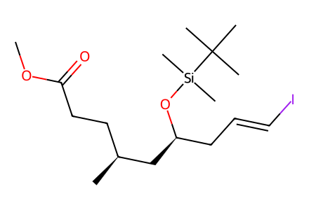
COC(=O)CC[C@H](C)C[C@H](C/C=C/I)O[Si](C)(C)C(C)(C)C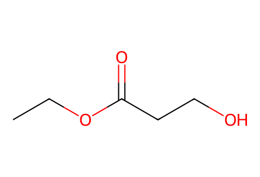
CCOC(=O)CCO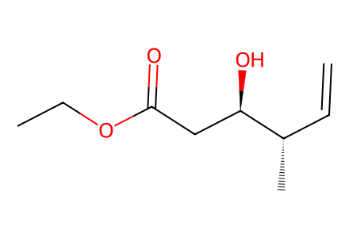
C=C[C@H](C)[C@H](O)CC(=O)OCC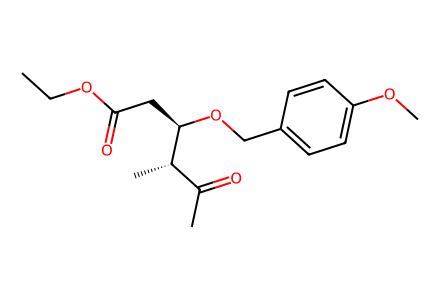
CCOC(=O)C[C@@H](OCc1ccc(OC)cc1)[C@@H](C)C(C)=O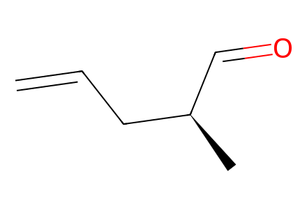
C=CC[C@H](C)C=O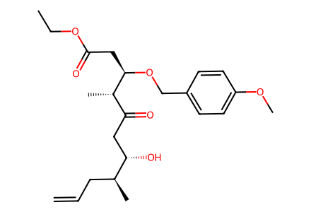
C=CC[C@H](C)[C@@H](O)CC(=O)[C@H](C)[C@@H](CC(=O)OCC)OCc1ccc(OC)cc1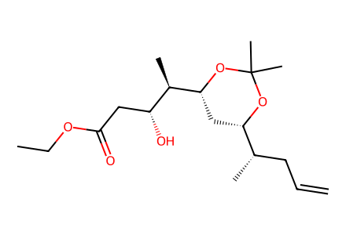
C=CC[C@H](C)[C@@H]1C[C@H]([C@H](C)[C@H](O)CC(=O)OCC)OC(C)(C)O1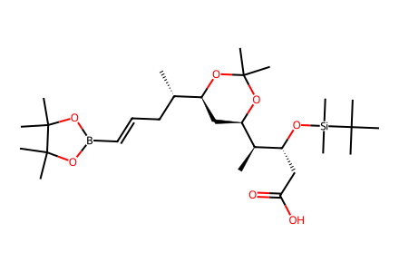
C[C@@H]([C@H]1C[C@@H]([C@@H](C)C/C=C/B2OC(C)(C)C(C)(C)O2)OC(C)(C)O1)[C@@H](CC(=O)O)O[Si](C)(C)C(C)(C)C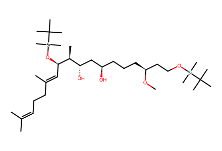
CO[C@@H](CCC[C@@H](O)C[C@H](O)[C@H](C)[C@@H](/C=C(\C)CCC=C(C)C)O[Si](C)(C)C(C)(C)C)CCO[Si](C)(C)C(C)(C)C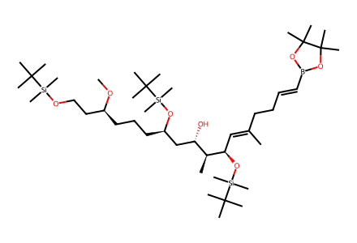
CO[C@@H](CCC[C@H](C[C@H](O)[C@H](C)[C@@H](/C=C(\C)CC/C=C/B1OC(C)(C)C(C)(C)O1)O[Si](C)(C)C(C)(C)C)O[Si](C)(C)C(C)(C)C)CCO[Si](C)(C)C(C)(C)C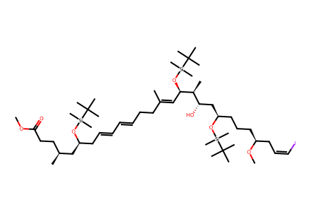
COC(=O)CC[C@H](C)C[C@H](C/C=C/C=C/CC/C(C)=C/[C@@H](O[Si](C)(C)C(C)(C)C)[C@@H](C)[C@@H](O)C[C@@H](CCC[C@@H](C/C=C\I)OC)O[Si](C)(C)C(C)(C)C)O[Si](C)(C)C(C)(C)C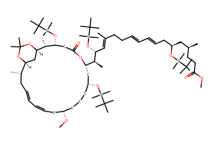
COC(=O)CC[C@H](C)C[C@H](C/C=C/C=C/CC/C(C)=C/[C@@H](O[Si](C)(C)C(C)(C)C)[C@@H](C)[C@@H]1C[C@H](O[Si](C)(C)C(C)(C)C)CCC[C@H](OC)C/C=C\C=C\C[C@H](C)[C@@H]2C[C@@H](OC(C)(C)O2)[C@H](C)[C@H](O[Si](C)(C)C(C)(C)C)CC(=O)O1)O[Si](C)(C)C(C)(C)C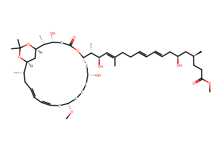
COC(=O)CC[C@H](C)C[C@@H](O)C/C=C/C=C/CC/C(C)=C/[C@@H](O)[C@@H](C)[C@@H]1C[C@H](O)CCC[C@H](OC)C/C=C\C=C\C[C@H](C)[C@@H]2C[C@@H](OC(C)(C)O2)[C@H](C)[C@H](O)CC(=O)O1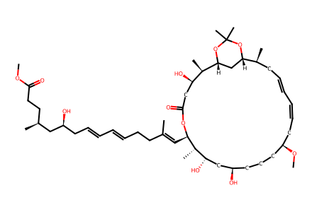
COC(=O)CC[C@H](C)C[C@@H](O)C/C=C/C=C/CC/C(C)=C/[C@H]1OC(=O)C[C@@H](O)[C@@H](C)[C@H]2C[C@H](OC(C)(C)O2)[C@@H](C)C/C=C/C=C\C[C@@H](OC)CCC[C@@H](O)C[C@H](O)[C@@H]1C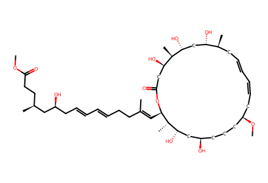
COC(=O)CC[C@H](C)C[C@@H](O)C/C=C/C=C/CC/C(C)=C/[C@H]1OC(=O)C[C@@H](O)[C@@H](C)[C@H](O)C[C@H](O)[C@@H](C)C/C=C/C=C\C[C@@H](OC)CCC[C@@H](O)C[C@H](O)[C@@H]1C